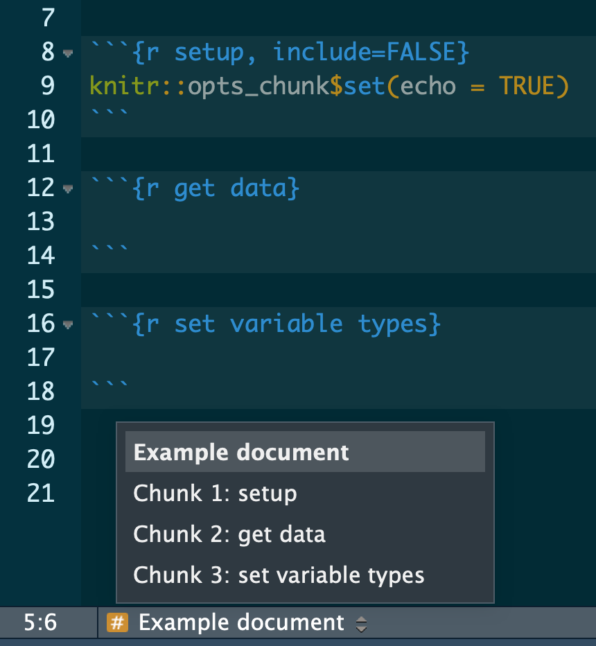

R Best Practices
When learning to write code for research projects, it can be overwhelming to figure out how to set-up a project and the novice programmer may not yet have the experience necessary to forsee potential pitfalls of a given, seemingly inconsequential decision. This post provides a discussion of best practices1 for developing code-based projects and for writing R code in a research setting with an eye toward proactively avoiding common pitfalls. While reading, it is worth keeping in mind that what works for a certain project or with different collaborators will likely vary, but a consistent and well thought out approach to designing project structures and writing code provides a strong base from which to develop subsequent projects.
1 Project organization
1.1 Keep files in a project folder
It is good practice to keep all files for a given project in the same project-specific folder. You can then create sub-folders for specific types of files, such as data, figures, function files, and manuscripts. Using a consistent folder structure and file naming system across projects makes it easier to:
- Navigate the project contents.
- Resume work after a hiatus.
- Re-use code in multiple projects.
Here is an example of a basic project layout:
project
├── 0_get_data.R
├── 1_preprocess_data.R
├── README.txt
├── data
├── doc
├── figs
├── output
└── src Code files are stored in the top level of the project directory (e.g. 0_get_data.R and 1_preprocess_data.R). Also stored in the top level directory is a README.txt file that contains a description of the project and a brief summary of for each file and folder in the project.
1.1.1 Folder sub-directories
project
project is the top-level folder and contains all of the folders and files associated with that project. This folder should be renamed for each unique project in a way that indicates what it is (e.g. discounting_study).
data
data contains the raw data files used in the project. These files should not be altered and are ideally read-only.
doc
doc contains any manuscripts or interim summaries produced with the project.
figs
figs contains any plots, images, tables, or figures created and saved by your code. It should be possible to delete and regenerate this folder with the scripts in the project folder.
output
output contains non-figure objects created by the scripts. For example, processed data or logs.
src
src is an optional folder for any files you may want to source()
in your scripts. This is not code that is run. For example, simple .R files containing functions.
See also
- Designing Projects, by Rich Fitzjohn, for more on directory layouts and projects in RStudio.
Research Workflow, by the Boettiger Group, for an approach to organizing workflows based on R Package guidelines.
1.2 Give files meaningful names
Each file should have a short, descriptive name that indicates its purpose. Names should include only letters and numbers with dashes- or underscores _ to separate words. Files that are part of the same work flow should be numbered to indicate the order in which they are to be run. For example:
0_get_data.R
1_preprocess_data.R
2_plot_data.R
3_lm_models.R
1.3 Use modular scripts
Writing short, modular scripts helps prevent an analysis script from becoming too verbose. This makes it easier to figure out what the script is doing and to troubleshoot when something goes wrong. These scripts can then be run individually, or written as functions and incorporated into a primary analysis script using source().
1.4 Use RStudio projects
While not essential for a good workflow, RStudio Projects are an easy way to keep everything you need for your analysis together and make it easier to create reproducible and shareable projects (more on reproducibility later). An RStudio project should be created at the top level of a project directory (the project folder in the above example).
See also
- RStudio’s page on RStudio Projects
- Chapter 8, Workflow:projects of Hadley Wickham’s R for Data Science book.
2 Code organization
Organizing the code within a file makes it more readable and navigable, for yourself and others.
2.2 Describe your code
Every file should start with a brief description of what it does. This can be in the form of a comment block in a simple .R script, or text in an R Markdown (.Rmd) file.
Example:
# This script reads in raw data from the cities_data.csv file and runs our lab's
# standard preprocessing stream on the data. A preprocessed data frame is generated
# and saved as cities_ppc.Rda2.3 Top-heavy set-up
Put the following components at the top of a script:
library()- Hard-coded lines
source()
Including these components at the top of a script makes the run requirements more transparent. Loading packages and functions at the top of a script makes it clear what is required for the analysis. Similarly, including hard-coded content at the top of the script makes it clear what someone else running your code will have to change for it to work.
Example:
# Load the required packages
list_of_packages <- c("janitor", "here")
lapply(list_of_packages, library, character.only = TRUE)
# Source functions
source(file = here("myfunctions.R"))
# Set hard-coded variables
path_datafile <- here('data/data_file.csv')3 The code itself
3.2 R Markdown
R Markdown allows analyses to be run and displayed in an easily readible document (HTML, PDF, WORD). This is especially useful when working with collaborators, to document complicated or long analyses, when you want to generate a summary report for yourself, or when you want an easier to read output of your analysis. There are many useful online resources for information on formatting R Markdown documents.
3.3 Name your chunks
When using R Markdown, name your chunks of code for easy navigation using the handy, built-in table of contents at the bottom left of your RStudio editor window.
Example

See also
- R Markdown: The Definitive Guide, by Yihui Xie, J. J. Allaire, and Garrett Grolemund, for everything you’ve ever wanted to know about R Markdown.
- A dive into R Markdown, course content from Benjamin Soltoff.
- Pimp my RMD: a few tips for R Markdown, by Yan Holtz, for some quick R Markdown formatting tips.
- the R Markdown Cheatsheet
3.4 Develop a Style
Hadley Wickham has written an entire book on coding style. I suggest following his guidelines for developing a coding style if you don’t have one already (and maybe even if you do), but the most important thing about whatever style you use is that it be consistent. This includes consistency in:
- Naming things (variables, functions)
- Organization across and within files
- Appearance (indentation, spacing)
- Commenting 4 Reproducibility
Writing code that will produce the same results across time, host machines, and people running the code is self-evidently important. Here are some ways to improve the reproducibility of scripts.
4.1 Use flexible coding
Using flexible coding helps prevent unintended consequences when something is changed upstream and decreases the likelihood of mistakes.
4.2 Avoid setwd() and rm(list = ls())
There is an entire post by Jenny Bryan on why setwd() and rm(list = ls()) should be avoided.
Briefly, setwd() relies on a hard coded path that must be changed if anyone else uses the code or if the file is moved on the host machine. A better alternative is to use the here package, which is flexible across machines and does not require other users to change the path if they are running the script from the same project directory. This is why here() works particularly well with R Projects, which retain the structure and content of projects across directories or machines.
Many people use rm(list = ls()) to clean their environment at the start of a script. However, rm(list = ls()) does not create a new R session, which means that there may still be hidden dependencies (libraries, functions) that the author of the code is unaware of but that will prevent the code from running for a different user.
4.3 Don’t save your workspace
It is a good idea to start every work session with a clean environment so you know what packages or dependencies the code requires. Toward that end, don’t save your workspace.
- Go to RStudio > Preferences...
- Uncheck the box for "Restore .RData into workspace at setup".
- Set "Save workspace to .RData on exit" to "Never". 4.4 Use library() not require()
Using require() silences warnings that may be necessary for the user to properly implement certain functions. See Yihui Xie’s blog post for a full discussion.
4.5 Use version control
Version control is a means of recording changes between different versions of a file over time. It provides the ability to “roll-back” changes and recall an earlier version of a file. Git and Github are a particularly useful means of version control as RStudio has a Git integration that makes version control a bit easier for those who are new to it or who less comfortable using the command line. This book by Jenny Bryan is a wonderful resource for getting started.
See also
- Getting Started - About Version Control, a step-by-step guide
- A more in-depth account with The Git Book
4.6 Track package versions
It is a good idea to track package versions used in your code. That way, if anything changes in the package, you will know what version is needed to make your code work. There are a few different ways to track package versions in R Projects. One is {packrat}, which when it works provides a snapshot of all your package versions for a project. However, it is difficult to use and can be buggy. Another option still earlyi in development is {renv}, which like {packrat} uses private package libraries to track package versions. {renv} is by developed by RStudio and is therefore likely to provide code base with ongoing maintainence. The third and likely most robust means of version controlling your packages and code environment is {drake}, which creates a reproducible build system stable across systems and time. While {drake} is probably the best option in terms of reproducibility, it requires a genuine commitment to get up and running that is not for the faint of heart.
5 Use functions
If you’re copy pasting code with few changes, write a function instead. Nice R Code has a good introduction to writing functions for those new to the idea. For a more in-depth introduction to functions, see Hadley Wickham’s chapters on functional programming in the R for Data Science book, or see a more in depth discussin in his Advanced R book. It is generally better to choose vectorization over loops as functions require less text and can run more quickly.
When writing functions:
- Write simple functions that do only one thing.
- Create files of related or single functions.
- Document them well.
Additional resources
- Advanced R, by Hadley Wickham
- The tidyverse style guide, by Hadley Wickham
- R for Data Science, by Hadley Wickham
- R Code – Best practices
- U.S. Geological Survey blog post: Beyond Basic R
- Software Carpentry: Programming with R
- What They Forgot to Teach You About R, by Jennifer Bryan and Jim Hester
- RStudio Online Learning Website
- Happy Git and GitHub for UseR, by Jenny Bryan
The best practices discussed here are based on personal experience and the resources referenced in the post. They are not hard rules, nor are they immutable. There is a degree of personal preference inherent in the guidelines and my thoughts on these practices will likely continue to evolve with time and experience.↩
3.1 Comment your code
Incessantly. Even more than you do now. Comments should note analysis decisions, summarize results or steps, and break-up sections of code that do different things. If you have lots of comments or if you will be sharing your code with collaborators, it is worth considering R Markdown.